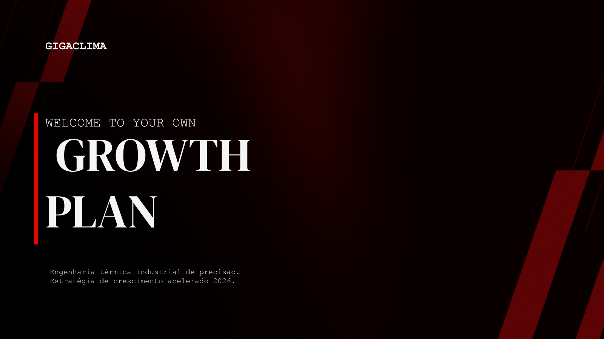
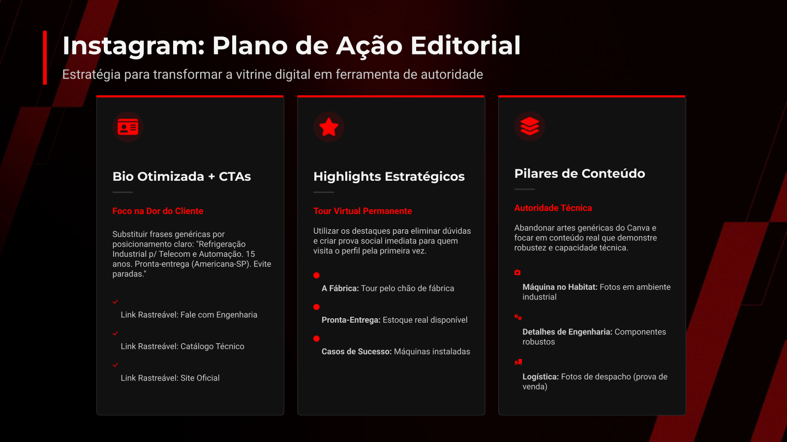

Calendário + rotina
Movement Academia
Tabela ampla com cor por categoria e card lateral de rotina. Ideal para calendário editorial.
Comparação visual dos 10 slides enviados. Este arquivo serve como mapa rápido para decidir quais padrões entram no gerador HTML/PPTX/Google Slides.
Tabela ampla com cor por categoria e card lateral de rotina. Ideal para calendário editorial.

Timeline horizontal e cards por frente. Bom para proposta comercial e operação contínua.

Cards numerados em duas colunas com frase final forte. Perfeito para fechamento executivo.

Minimalista, premium e editável. Boa quando não existe asset visual forte.

Prints de WhatsApp com diagnóstico lateral. Excelente para provar problemas, não apenas narrar.

Etapas horizontais com desfechos ganho/perdido. Deve virar layout canônico do IR.

Quatro colunas, última em destaque vermelho. Ótimo para copy e argumentos comerciais.

Diagrama conceitual + cards numéricos. Bom para TAM/SAM/SOM e oportunidade financeira.

A capa mais forte do lote. Fundo-imagem com metáfora de velocidade e título gigante.

Três cards verticais com ícones e bullets. Bom, desde que a densidade de texto seja controlada.
Veredito: o próximo passo da skill é adotar um modelo híbrido: fundo premium/cinematográfico quando necessário, com conteúdo operacional totalmente editável por cima. Isso aproxima do Genspark sem perder a utilidade no Google Slides.